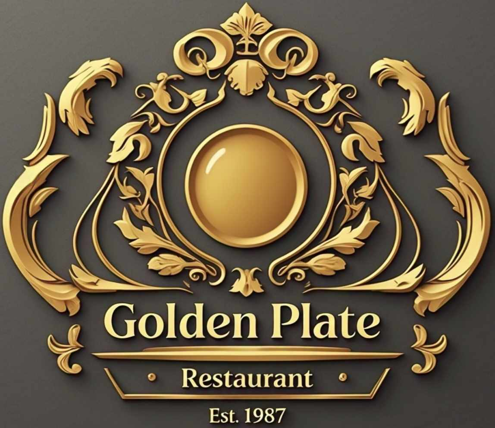

Golden Plate is a unique and vibrant restaurant that offers a one-of-a-kind dining experience with its 7 themed days, each representing a different culinary journey. Every day of the week, guests can immerse themselves in a new theme, ranging from exotic international cuisines to nostalgic retro dining or even futuristic gastronomy. The restaurant prides itself on creativity, exceptional service, and a menu that changes daily to match the theme, ensuring a fresh and exciting experience for every visit. Golden Plate is more than just a meal—it’s an adventure for the senses!